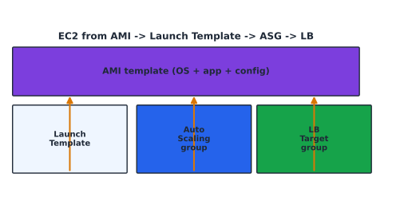

Compute Infrastructure Administration#
Learning Objectives#
Launch and manage Amazon EC2 instances.
Use AMIs and pick instance types.
Drive consistent provisioning with Launch Templates.
Understand Infrastructure Provisioning and AWS CloudFormation basics.
Amazon EC2#
Amazon EC2 provides resizable virtual servers (“instances”) across Regions/AZs.
Concept |
What it is |
|---|---|
Instance |
a running virtual server |
AMI |
bootable template (OS + app + config) |
Instance type |
vCPU/RAM/storage profile |
Key pair |
SSH key for Linux login |
Security group |
instance firewall (Ch 4) |
Lifecycle: launch → run (has a private/public IP) → connect (SSH) → configure → stop/restart/replace/terminate.
Amazon Machine Images (AMI)#
An AMI is a golden image: a reusable template to boot a consistent instance.
{kind=link}

Fig. 11 AMI feeds a Launch Template; Auto Scaling launches many; the LB target group receives their traffic.#
Property |
Notes |
|---|---|
Region |
AMIs are regional — copy across regions |
Architecture |
x86-64 vs arm64 (Graviton) must match instance type |
Image type |
EBS-backed (default) / instance-store |
Permissions |
public, private (shared) |
Bake a base OS + common tooling into the AMI so every launch starts identical and fast (“infrastructure as immutable images”).
Instance Types#
Choose by workload. Each family tunes the vCPU:memory ratio and the underlying hardware.
Family |
Tune |
Example |
|---|---|---|
T |
burstable general |
t3.micro, t4g.small |
M |
general balance |
m5, m7g |
C |
compute-heavy |
c5, c7g |
R |
memory-heavy |
r5, x2ie |
X/I |
extreme memory/IO |
x1e, i3 |
P/G/Inf |
GPU/ML |
p3, g4dn, inf1 |
Z |
low latency |
z1d |
cost per vCPU-hour = OnDemand price / number of vCPUs — right-size by measuring CPU!
Launch Templates & Configurations#
A Launch Template captures the launch spec (AMI, instance type, key pair, SGs, user data, IAM role) so instances launch identically.
Mechanism |
Used by |
Mutability |
|---|---|---|
Launch Template |
EC2, ASG, Spot Fleet |
versioned & updatable (modern) |
Launch Configuration |
ASG (classic) |
immutable (legacy; avoid) |
Always template your standard images so Auto Scaling reproduces them.
Infrastructure Provisioning & CloudFormation#
Provisioning = creating IaC rather than manual clicks. Tools: CloudFormation, Terraform, CDK, plus config-management (Ansible/Puppet).
CloudFormation (YAML, the “Infrastructure as Code” core)#
A stack is a set of resources managed as a unit, declared in a template.
AWSTemplateFormatVersion: "2010-09-09"
Parameters:
InstanceType:
Type: String
Default: t3.micro
Resources:
WebServer:
Type: AWS::EC2::Instance
Properties:
ImageId: ami-0abcdef1234567890
InstanceType: !Ref InstanceType
SecurityGroupIds: ["sg-..."]
Outputs:
PublicIP:
Value: !Ref WebServer
Construct |
Role |
|---|---|
Resources |
what to create (EC2, RDS, S3…) |
Parameters |
inputs (no hard-coding) |
Mappings |
lookup tables |
Conditions |
conditional creation |
Outputs |
values shared to other stacks |
Pseudo-parameters:
AWS::Region,AWS::AccountId,AWS::StackName.Functions:
Ref,Fn::GetAtt,Fn::Sub,Fn::ImportValue(cross-stack).Change sets preview changes; drift detection catches manual edits.
Always treat infrastructure as code: version it, review diffs, test in a dev account, promote via pipelines.
Checkpoint#
Q1. What four-letter AWS compute service gives resizable VMs, and how are they billed?
Answer. EC2; billed per-second (or hour) of running time plus EBS + data-transfer.
Q2. Why should an AMI’s region/architecture match its instance type?
Answer. AMIs are regional (copy to use elsewhere) and must match the instance’s CPU architecture (arm64 image on arm64 instance, etc.).
Q3. Which CloudFormation construct exports a stack’s value to other stacks, and which function imports it?
Answer. Outputs export; the consumer reads them via Fn::ImportValue.
Q4. Give one benefit and one risk of right-sizing an instance family choice.
Answer. Benefit: lower cost / better utilization; risk: a too-small family can throttle CPU credits (T) or run out of memory for the workload.
Q5. What is the safe deployment order for a new launch template version used by an ASG?
Answer. Create a new version → edit the ASG to use it → let new instances launch with it while draining old ones, so a bad template can’t break the whole pool instantly.
Sources#
The concepts in this chapter are summarized from the following authoritative sources:
Amazon EC2 User Guide: https://docs.aws.amazon.com/AWSEC2/latest/UserGuide/
AWS CloudFormation User Guide: https://docs.aws.amazon.com/AWSCloudFormation/latest/UserGuide/
Auto Scaling User Guide: https://docs.aws.amazon.com/autoscaling/ec2/userguide/